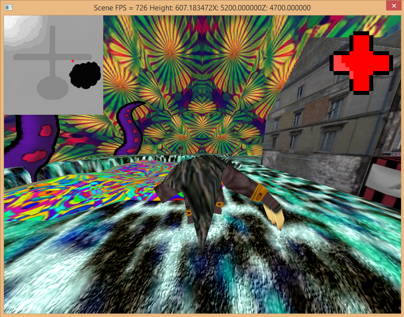

This was my first game, created as a first year project.
It is a fairly basic side-scroller with two types of enemies (Tanks, Planes) and the player’s goal is shoot
them down or attempt to jump onto the tanks, while collecting the “acid” pick-ups, which make the player
temporarily immortal and give him +1 life and ammo, while doubling the points received, while the pick-up is active.
Lightning Speed!
“Lightning Speed” is a university project, which involves an Arduino Uno micro controller.
I was responsible for the programming, which was done in the Arduino IDE (Basic C).
The code is fairly simple loop, with several conditional statements to determine, whether or not the player will progress.
Irrlicht Game Engine
For my second year at university as part of an assignment aimed at improving C++ skills,
we were tasked with creating a 3D game scene, using the Visual Studio Irrlicht library.
The projects aim was to create reusable code which could serve as an engine for future projects.

VECTOR.rotate
VECTOR.rotate was our entry to the Global Game Jam 2015. The game was made using Unity.
I was joined by Daniel Stroud, Ashley Bass and Ben Weatherill (music) as we created a music based game.
The essence of the game is quite simple as a randomly generated object must be fitted to it’s outlines through rotation
(mouse movement for PC, touch controls for mobile devices).
Cubic
Cubic is my second original Android game. It is a fairly simple arcade-like game,
which tests player’s reaction speed. Players can either swipe or tap the green cubes in order to progress.
Red cubes must be avoided. The player has 3 seconds for each level and if he fails to complete it within the
allotted time, he is penalized by having less time the next round and an extra red cube.
Hitting a red cube causes the same penalty.
A Tall Tale: Grom Edition
This game was made as a team project for the 2015 Imagine Cup. It is a quest-based puzzle game,
which requires players to find solutions to the quests using a special head-switching mechanic, which is similar to a point-click style game.
The members of the team were myself, Taylor Sutton, Chloe Broadbent and Brandon McGarth.
I was the project leader for this assignment. My technical contribution to this project was the mechanic used to scan the surroundings
and find the alternative solutions to quests, which was tied to the story of the two-headed ogre. I also wrote the code for the movement,
camera movement and camera switching. I also implemented most of the quests. Quest solutions either benefit the human faction or the animal faction
and it is up the player to decide whether to balance their actions or to choose one of the factions. The game has potential to be further developed,
because of the ease with which new quests can be implemented.
MemeBuchet
MemeBuchet was a project built for BrumHack 5.0 in October 2016. The project was built as a part of a team consisting of myself, Oscar Molnar, Georgi Pavlov and Matty McDonald.
The game features a character selection screen in which player's can choose their unique champion after which they must do combat using their unique projectile. Each launch's power and trajectory is determined by the launch power - made visible by the red bar at the bottom of each player's side.
The game is a 2person local multiplayer with controller compatibility. My role within the team was programming the character selection screen as well as the projectile launching system.
DirectX11 Game Scene
This scene was built as part of an assignment using DirectX11. The aim of the assignment was to create a fairly reusable and robust "game engine" in DirectX11.
The scene features textured models, moving models using animators, billboards, fog, lighting, character movement (FPS), terrain and skybox. Each element has its own class, which handles the implementation of said element into the gamescene. The current project could easily be reskinned or altered by
simply passing in different parameters to the calls in the ProjectBase class (which handles the majority of the scene setup and layout.
Ahoy There!
Ahoy There! was a project created a GlobalGameJam 2017. The game is a pirate boat managment game, which features an in game economy and interactive map, through which your pirates can venture
onto land in order to find more treasures and battle other pirates. The game's economic system allows the purchase of new crew members, each of which has a unique bio and character image. Each island
is randomly generated using some initial assets and parameters. My role was programming the island adventures - they feature a simple combat system, based on jumping on enemy heads. The game also features
a floating text notification system - upon interaction with the enemy units.
FightAR
FightAR was a game built for BCUHack 2.0 and is an augmented reality card based fighting game. The player has access to different characters based on their card - the characters will fight each other
(with corresponding animations) until one of them looses.
M,N,K with AI Strategy
As a part of my AI for Games module, I had to develop a scalable tic-tac-toe game with AI for the opponent. The project is built in Unity and uses a Minimax algorith for the opposing player. The algorithm attempts
to predict future moves and evaluates the board state of these possible outcome. I also implemented alpha-beta pruning, which improves the performance of said algorithm. I did find that the heuristic evaluation that
the algorithm performs is potentially one of its weakest spots. If that is written well, the enemy will play well on any board size.